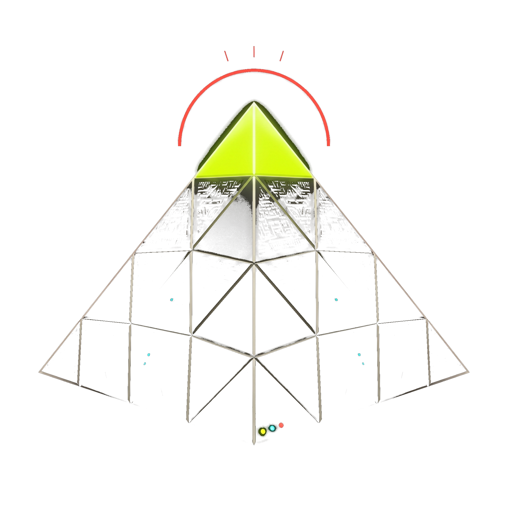

THE NEST· The Null Result · Aym AbdallaA free report by Aym Abdalla. The trading null result, opened up.
You asked for the evidence behind "we tested 55 trading strategies and they all lose after costs." Here it is: the kill list, the cost floor, the traps we found, and the rules we now force every new idea through. No filters, no screenshots of winners. The corpses, filed.
Round-trip cost on a $100 position = $0.30 (0.10% taker fee each way + 0.05% slippage each way).
Every strategy we tested landed between -$0.25 and -$0.35 PnL per trade.
That is not a spread of outcomes. It means gross edge is indistinguishable from zero across the entire library. These strategies are not bad at predicting direction. They are not predicting anything. Net result equals negative transaction cost — exactly what a coin flip pays.
Any new hypothesis must clear the cost hurdle in GROSS terms before it is worth anything. It does not move with account size (verified: identical results at $100 and $100,000, because percentage fees scale with position).
The correct statistical verdict is "no LARGE edge", not "no edge." To distinguish +$0.09/trade from zero needs roughly 4,000–8,700 trades; several rare patterns had far fewer and could not be judged per-ticker. We state the uncertainty, not a false certainty.
But the pooled library — where the sample sizes are huge — is decisive: implied gross edge across 1.9M pooled trades is +$0.0011 per trade. Eleven hundredths of a cent. At any positive cost they lose, and at zero cost they make nothing.
| Cost model | Net PnL/trade |
|---|---|
| modeled 0.10% taker + 0.05% slip = $0.30 | -0.299 |
| claimed 0.02% taker + 0.05% slip = $0.14 | -0.139 |
| maker 0% + no slippage = $0.00 | +0.001 |
Even at the most generous real-world cost assumptions, nothing in the library clears the bar. Cost reduction is not a footnote — it is the structural variable of the entire search space.
| Strategy | Pooled trades | Win rate | PnL/trade |
|---|---|---|---|
| grid_1.0atr | 259,362 | 19.7% | -0.297 |
| fair_value_gap | 165,110 | 13.9% | -0.297 |
| stoch_rsi_oversold | 121,575 | 17.4% | -0.290 |
| grid_2.0atr | 113,490 | 24.8% | -0.271 |
| ema_pullback | 74,528 | 13.9% | -0.297 |
| breakout_20 | 65,622 | 23.6% | -0.314 |
| momentum_continuation | 65,589 | 23.6% | -0.314 |
| volume_surge | 41,709 | 20.2% | -0.335 |
| macd_crossover | 38,461 | 23.7% | -0.322 |
| bullish_marubozu | 34,356 | 17.2% | -0.345 |
| hammer | 6,839 | 18.3% | -0.300 |
| C5 (custom) | 4,204 | 36.4% | -0.709 |
| dragonfly_doji | 1,980 | 11.4% | -0.443 |
| morning_star | 1,699 | 21.7% | -0.398 |
| upside_tasuki_gap | 855 | 11.9% | -0.301 |
| mat_hold | 396 | 34.1% | -0.016 |
| bullish_abandoned_baby | 333 | 11.4% | -0.452 |
No row is positive. The best entries sit just under zero, and the worst (C5, -0.709/trade) is genuinely negative gross edge — worse than paying the cost.
These cost us more than the strategy results. Several silently invalidated earlier conclusions.
id() returning stale arrays; Binance switching kline timestamps to microseconds mid-dataset. Every one produced confident, wrong numbers before it was caught.A bot that says "I don't know" is the only bot worth trusting with money. We built the thing everyone else screenshots — and it told us NO. That is not a closing argument, it is a starting point. The graveyard is the most valuable artifact we own, because a null result only compounds if you keep the corpse.
Shadow-only, paper-only, never a real dollar. No live trading. The full method: a 21-check validation harness with an oracle control, a lookahead detector, fee-application checks, and cross-engine agreement; 4,692 passing tests in the engine suite.
Subscribe to The Nest for the next report — what we try to break next, and the rules it has to clear first.
Generated 2026-08-31 · Shadow-only, paper-only. Numbers verified against the project's own data.